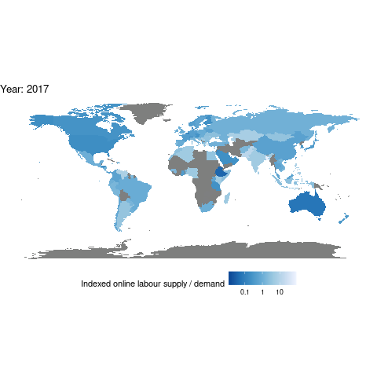

Here I make an animated graph showing the increasing online labour outsourcing from developed countries to developing countries. The data consists of data from the OLI (http://onlinelabourobservatory.org/oli-demand/; http://onlinelabourobservatory.org/oli-supply/).
The R-code used can be found below.
demand <- read.csv(here("oli/bcountrydata_2022-01-09.txt"))
supply <- read.csv(here("oli/worker_countrydata_2022-01-09.txt"))supply = supply %>% mutate(timestamp = as.Date(timestamp)) %>%
group_by(country, timestamp) %>%
summarise(num_workers = sum(num_workers))
demand = demand %>% mutate(timestamp = as.Date(timestamp)) %>%
group_by(country, timestamp) %>%
summarise(count = sum(count))data = inner_join(supply, demand, by = c("country", "timestamp")) %>%
mutate(country = as.character(country)) %>%
na.omit()
data = data %>% mutate(year = year(timestamp)) %>%
filter(year != 2022)
sums = data %>% group_by(timestamp) %>%
summarise(sum_supply = sum(num_workers),
sum_demand = sum(count)) %>%
ungroup()
data = left_join(data, sums, by = "timestamp")
data = data %>%
mutate(supply = num_workers / sum_supply,
demand = count / sum_demand) %>%
group_by(country, year) %>%
summarise(demand = mean(demand),
supply = mean(supply))
data = data %>% mutate(net_export = supply/demand)
delete_countries = data %>% filter(is.na(net_export)) %>% select(country) %>%
distinct() %>% as.list()
data = data %>% filter(!(country %in% delete_countries))
data$country = ifelse(data$country == "United States", "USA", data$country)
data$country = ifelse(data$country == "United Kingdom", "UK", data$country)
data = data %>%
select(-c(demand, supply)) %>%
pivot_wider(names_from = year, values_from = net_export, names_prefix = "year_")world = map_data("world")
world = world %>% mutate(country = region) %>%
select(-region)
world = left_join(world, data, by = "country")
world = world %>%
pivot_longer(cols = 7:ncol(world),
names_to = "year",
names_prefix = "year_",
values_to = "net_export")
world = world %>% mutate(year = as.integer(year))
my_breaks = c(0.1,1,10)
mapplot = world %>%
ggplot() +
aes(x = long, y = lat) +
geom_polygon(aes(group = group, fill = net_export),
color = "black", size = 0.01) +
theme_void() +
theme(legend.position="bottom",
legend.direction = "horizontal") +
scale_fill_distiller(name = "Indexed online labour supply / demand",
palette = "Blues",
trans = "log",
breaks = my_breaks,
labels = my_breaks) +
coord_fixed() +
transition_time(year) +
labs(title = "Year: {frame_time}")
ani <- animate(mapplot, duration = 3)
ani